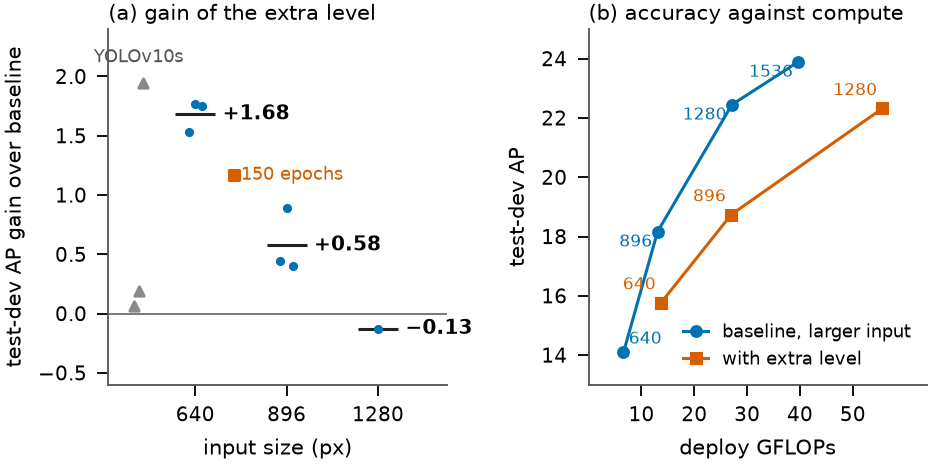
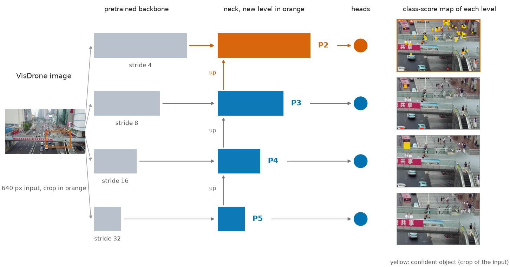
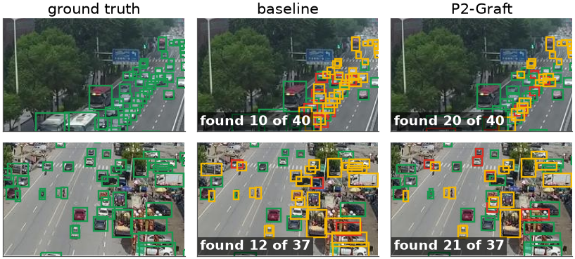
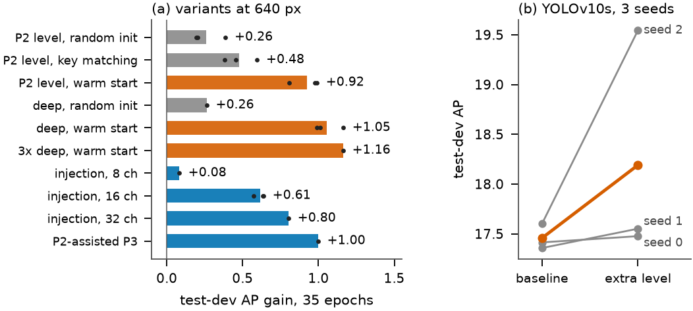

The findingThe extra level helps at 640 pixels and less with every step up in resolution
Drone images are dominated by small objects. In the VisDrone-DET2019 training split, 60.5% of the 343,204 annotated boxes cover less than 32×32 pixels. After the resize to a 640-pixel network input, the median box measures 10.7×11.4 pixels, smaller than one cell of the stride-8 grid of the finest YOLO head. A prediction level at stride 4 (P2) is therefore the common remedy.
Reported gains of such a level are difficult to compare, because baselines are often copied from other papers with other schedules, input sizes and evaluation code, and a larger input is rarely tried. The study asks when the level pays off and what the level costs compared with raising the resolution. Every number comes from saved predictions scored on VisDrone test-dev, a split never used for a decision.
The gain shrinks from +1.68 at 640 px to −0.13 at 1280 px

How it worksA branch that cannot change the pretrained outputs
P2-Graft appends one level to the detection pyramid. The branch reads the stride-4 backbone feature and the pretrained P3 neck feature, and no existing layer reads the new level, so the three original outputs equal the pretrained outputs exactly at initialisation. The maximum absolute difference over neck features and raw head outputs is 0, checked for YOLOv10n and YOLOv10s.
p2 = G([Up2×(p3), b2]), y2 = H(p2)
A level starting at random must learn what the P3 level already knows about boxes and classes. The weights of the P3 neck block and the P3 head are therefore copied into the new block and head wherever tensor shapes agree, covering 0.22 M parameters. The deeper variant repeats the block twice. Both choices were fixed by a 35-epoch search over five candidates on validation AP, and the winner, the deeper block with warm start, is called P2-Graft throughout.
The new stride-4 level fires on the small pedestrians

ResultsSame input size first, then the same compute
At 640 pixels, P2-Graft raises test-dev AP from 14.09 to 15.77, a gain of +1.68 with +1.53, +1.77, +1.75 in the three seeds. Small-object AP rises by 2.07 and validation AP by 2.89. The gain falls to +0.58 at 896 pixels and to −0.13 at 1280 pixels. A control with batch 32 for the model (one seed) gives +1.31 against the same-seed baseline, so the smaller batch needed at 896 pixels costs 0.42 AP. Longer training does not favour the new level either: 150 epochs at 640 pixels give +1.17.
| Model | Input | Seeds | GFLOPs | Test-dev AP | Val AP | Gain |
|---|---|---|---|---|---|---|
| YOLOv10n baseline | 640 | 3 | 6.6 | 14.09±0.09 | 17.75±0.26 | — |
| P2-Graft | 640 | 3 | 13.7 | 15.77±0.20 | 20.64±0.09 | +1.68 |
| YOLOv10n baseline | 896 | 3 | 13.0 | 18.16±0.10 | 23.23±0.07 | — |
| P2-Graft, batch 16 | 896 | 3 | 27.0 | 18.74±0.31 | 24.07±0.10 | +0.58 |
| P2-Graft, batch 32 | 896 | 1 | 27.0 | 19.51 | 25.25 | +1.31 |
| YOLOv10n baseline | 1280 | 1 | 27.1 | 22.45 | 28.44 | — |
| P2-Graft | 1280 | 1 | 55.6 | 22.32 | 29.14 | −0.13 |
| YOLOv10n baseline | 1536 | 1 | 39.7 | 23.89 | 30.29 | — |
| YOLOv10n baseline, 150 epochs | 640 | 1 | 6.6 | 14.46 | 18.37 | — |
| P2-Graft, 150 epochs | 640 | 1 | 13.7 | 15.63 | 19.86 | +1.17 |
| YOLOv10s baseline | 640 | 3 | 21.6 | 17.46±0.13 | 21.98±0.13 | — |
| P2-Graft, YOLOv10s | 640 | 3 | 39.8 | 18.19±1.17 | 23.29±1.74 | +0.73 |
The shrinking gain matters because P2-Graft doubles the deploy GFLOPs (13.7 against 6.6 at 640 pixels) and halves the batch-16 throughput (1,234 against 2,427 images per second at 896 pixels). Spending the same compute on resolution proves more effective: a baseline at 896 pixels costs 13.0 GFLOPs and reaches 18.16 AP, 2.39 above P2-Graft at 640 pixels. At 27 GFLOPs the baseline at 1280 pixels reaches 22.45, 3.71 above P2-Graft at 896 pixels, and the baseline keeps improving to 23.89 at 1536 pixels.
On two validation crops, P2-Graft finds 20 instead of 10 of 40 objects and 21 instead of 12 of 37

Inside the branchThe warm start is what makes the branch useful
Since the extra level pays off mainly at small inputs, the internals of the branch were examined at 35 epochs. With random initialisation the level adds only +0.26 AP, matching weights by tensor name gives +0.48, and the warm start gives +0.92, three seeds each. Depth helps only together with the warm start (+0.26 against +1.05). Detail injection, a strided convolution of the stride-4 feature added to the P3 head for 4% more GFLOPs, gives +0.61 with 16 channels but only +0.36 after 90 epochs at 640 pixels.
| Variant | Seeds | GFLOPs | Test-dev AP | Val AP | Gain |
|---|---|---|---|---|---|
| YOLOv10n baseline | 3 | 6.6 | 13.46±0.09 | 16.22±0.04 | — |
| P2 level, random init | 3 | 12.7 | 13.72±0.02 | 17.15±0.19 | +0.26 |
| P2 level, key-matched weights | 3 | 12.7 | 13.94±0.05 | 17.08±0.21 | +0.48 |
| P2 level, warm start | 3 | 12.7 | 14.39±0.08 | 18.05±0.02 | +0.92 |
| Deeper block, random init | 1 | 13.7 | 13.76 | 17.05 | +0.26 |
| Deeper block, warm start (P2-Graft) | 3 | 13.7 | 14.52±0.17 | 18.48±0.05 | +1.05 |
| 3× deeper block, warm start | 1 | 14.8 | 14.66 | 18.30 | +1.16 |
| Detail injection, 16 channels | 3 | 6.9 | 14.08±0.08 | 17.16±0.21 | +0.61 |
| P2-assisted P3, 32 channels | 1 | 8.8 | 14.49 | 17.82 | +1.00 |
Whether the gain carries over to a larger model was checked on YOLOv10s at 640 pixels. The mean gain is +0.73 (bootstrap interval +0.49 to +0.96), yet the seeds give +0.06, +0.19, +1.94. The standard deviation of the model across seeds is 1.17 AP against 0.13 for the baseline, so two of three seeds show no gain and the outcome is not counted as a replication.
On YOLOv10s, one seed out of three produces most of the average gain

Published resultsPlaced next to the numbers reported by other works
Validation numbers of other works on VisDrone are quoted from the respective papers, with the schedules used there (300 epochs for FBRT-YOLO), and were not re-evaluated. At 640 pixels, P2-Graft on YOLOv10n reaches 20.64 AP and 35.96 AP50 with 2.41 M parameters, above the reported YOLOv8-N (19.6 and 33.3) and FBRT-YOLO-N (20.2 and 34.4), after 90 epochs against 300. On YOLOv10s the model is level with the reported YOLOv10-S. DroneScan-YOLO, which also adds a stride-4 branch and trains at 1280 pixels, reports higher numbers than every model here.
| Model | Input | Params (M) | AP | AP50 |
|---|---|---|---|---|
| YOLOv8-N | 640 | 3.2 | 19.6 | 33.3 |
| FBRT-YOLO-N | 640 | 0.9 | 20.2 | 34.4 |
| YOLOv10-S | 640 | 7.2 | 23.8 | 39.3 |
| FBRT-YOLO-S | 640 | 2.9 | 25.9 | 42.4 |
| FBRT-YOLO-M | 640 | 7.2 | 28.4 | 45.9 |
| DroneScan-YOLO | 1280 | 10.23 | 35.6 | 55.3 |
| P2-Graft, YOLOv10n | 640 | 2.41 | 20.64 | 35.96 |
| P2-Graft, YOLOv10s | 640 | 7.58 | 23.29 | 39.86 |
| P2-Graft, YOLOv10n | 1280 | 2.41 | 29.14 | 47.75 |
| YOLOv10n baseline | 1536 | 2.27 | 30.29 | 49.42 |
LimitationsWhat the study does not show
- Only VisDrone and two model scales were used; no cross-dataset result is reported.
- Results at 1280 pixels, with 150 epochs, and at 1536 pixels have one seed.
- The 896-pixel comparison used a smaller batch for the model, and the control measuring the effect has one seed.
- The model was chosen on validation among five candidates, and the validation gain exceeds the test-dev gain (+2.89 against +1.68 at 640 pixels), so test-dev numbers are the ones to quote.
- Schedules of 35 to 150 epochs are shorter than the 300-epoch recipes of the literature, and absolute values should not be compared with published tables.
A stride-4 level grafted onto a pretrained YOLOv10 is worth 1.68 test-dev AP at 640 pixels, at twice the compute. For VisDrone, raising the input resolution is the better use of compute, and any stride-4 extension of a pretrained detector should report how the new weights are initialised.
CitationCite this work
@misc{nayeem2026p2graft,
title = {When Does a Stride-4 Prediction Level Help a
Pretrained YOLOv10 on Drone Images?},
author = {Nayeem, Quratulain and Taranum, Fahmina
and Uddin, Mohammed Mudassir and Rizwan, Sara},
year = {2026},
howpublished = {\url{https://github.com/Mudassiruddin7/YOLO}}
}